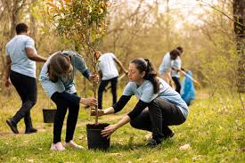

Construyendo bienestar y esperanza para las comunidades

Construyendo bienestar y transformación social desde 2014
La Fundación Colombiana por la Salud y la Vida es una entidad sin ánimo de lucro dedicada al fortalecimiento del bienestar integral, la salud comunitaria y el desarrollo social en Colombia.
Desde 2014 trabajamos en territorios urbanos y rurales promoviendo procesos de transformación social a través de metodologías simbólicas, narrativas, experienciales y sistémicas, integrando salud, educación, cultura y participación comunitaria.
Nuestra labor articula salud mental comunitaria, intervenciones individuales, familiares y comunitarias, habilidades para la vida, prevención de violencias, fortalecimiento familiar y juvenil, y acompañamiento técnico a instituciones públicas y privadas.

Misión
Promover el bienestar integral y la salud comunitaria mediante procesos educativos, psicosociales y territoriales que fortalezcan capacidades individuales, familiares y colectivas, contribuyendo a la construcción de comunidades más saludables, protectoras y participativas.
Visión
Para el año 2030 ser una organización referente en Colombia por su capacidad de generar procesos comunitarios innovadores, culturalmente significativos y sostenibles, que integren salud, educación, arte y participación para transformar realidades sociales.
Poblaciones con las que trabajamos

Herramientas y recursos desarrollados
